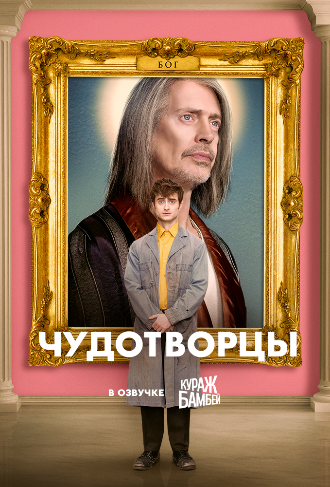
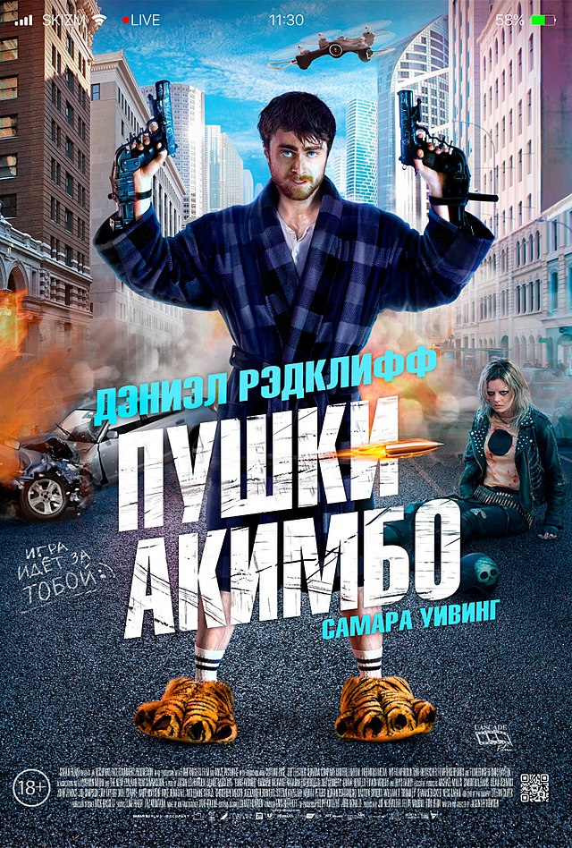

Чудотворцы
Бог решает уничтожить Землю. Чтобы это предотвратить, ангелы-клерки Крейг и Элиза должны исполнить невозможную молитву
Кинопоиск

Пушки Акимбо
Майлз был обычным разработчиком видеоигр, пока его не втянули в кровавый квест. Незнакомцы вломились в дом, прибили к рукам два пистолета и похитили любимую девушку. Теперь Майлзу придётся сразиться с Никс — безжалостной чемпионкой подпольных игр на выживание
Кинопоиск
Иллюзия обмана 2
«Четыре всадника», команда лучших иллюзионистов мира, снова в сборе! Их «магия» стала еще совершеннее, а враги — опаснее. На сей раз им предстоит спасти свою репутацию и вывести на чистую воду жестокого техномагната
Кинопоиск
Дэ́ниел Дже́йкоб Рэ́дклифф — британский актёр, продюсер.
Известен как исполнитель роли Гарри Поттера в многолетней серии одноимённых фильмов, снятых по произведениям писательницы Джоан Роулинг. В 2009 году был занесён в Книгу рекордов Гиннесса как самый высокооплачиваемый актёр десятилетия. Получил именную звезду на голливудской Аллее славы в Калифорнии за вклад в киноискусство